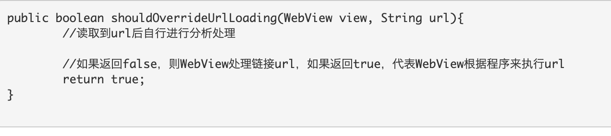
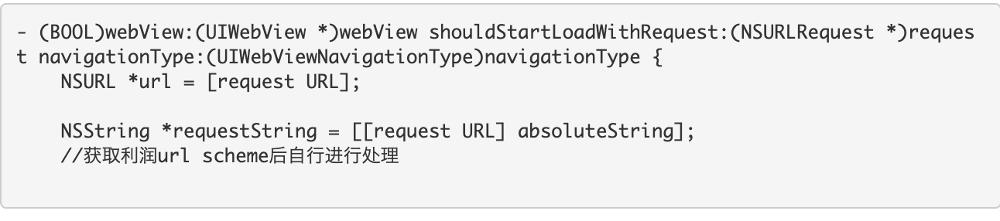

js 调用native
在Android中(WebViewClient里),通过shouldoverrideurlloading可以捕获到url scheme的触发

iOS中,UIWebView有个特性：在UIWebView内发起的所有网络请求，都可以通过delegate函数在Native层得到通知

native 调用js
JSBridge._handleMessageFromNative(messageJSON);
{handlerName:api名,data:数据,callbackId:回调id}
注意
1.支持的客户端版本
2.android jsbridge 会晚加载。通过jsbridgeready事件来触发
3.保存图片到本地需要执行完后再调用，要不会花